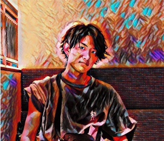
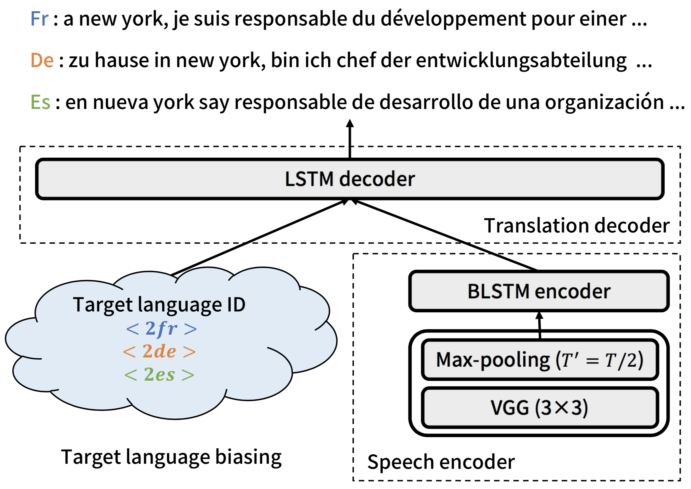
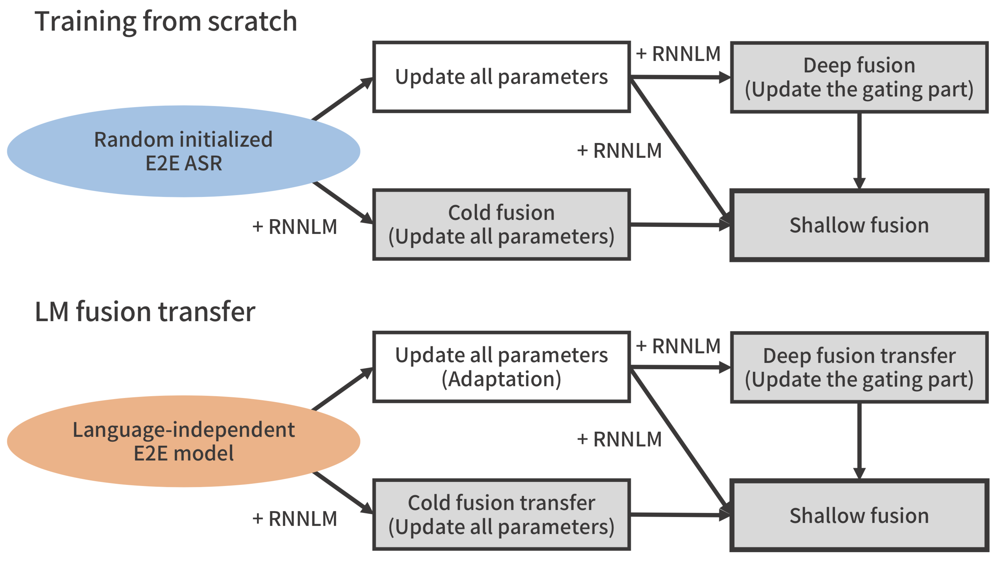
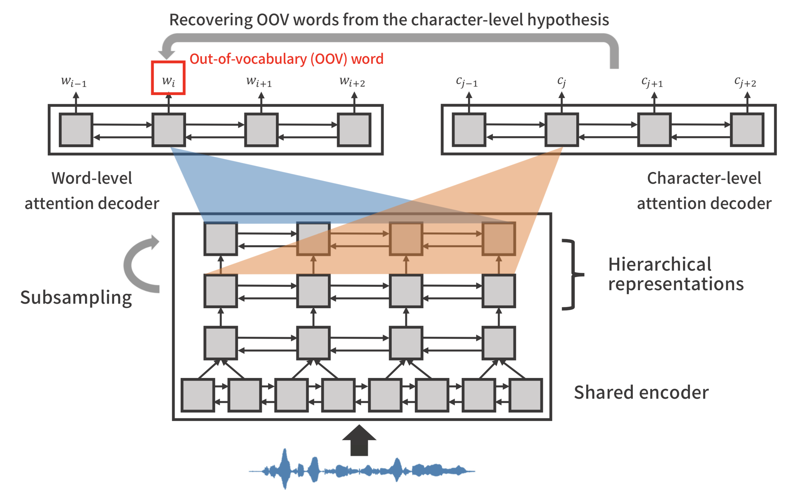
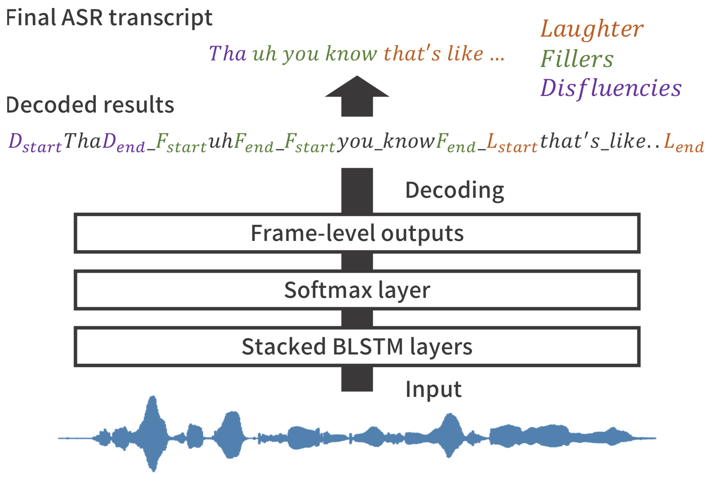

News😀
”Multilingual End-to-End Speech Translation” [arxiv],
”Comparative Study on Transformer vs RNN in Speech Applications” [arxiv]
About Me

I'm 2nd-year Ph.D. student at Graduate School of Informatics, Kyoto University, Kyoto, Japan.My CV is available here.
Email (office): inaguma [at] sap.ist.i.kyoto-u.ac.jp
Email (private): hiro.mhbc [at] gmail.com
Address (office): Research Building No.7 Room 407, Yoshida-honmachi, Sakyo-ku, Kyoto-shi, Kyoto, 606-8501, Japan
Google Schalor | GitHub | LinkedIn | Twitter
Research interests🤔
Automatic speech recognition (ASR)- End-to-end speech recognition
- Multilingual end-to-end speech recognition
- Language modeling
- Transfer learning
- Domain adaptation
- End-to-end speech translation
- Multilingual end-to-end speech translation
- Transfer learning
- Domain adaptation
- Unsupervised pre-training
- Semi-supervised training
Research topic🧐
Multilingual end-to-end speech translation
Integrated an effective multilingual framework into the end-to-end speech translation task, and showed significant improvements of the translation performances compared to the conventional bilingual models.See details in [Inaguma et al., ASRU2019].

Developed the language-independent end-to-end ASR system based on a single sequence-to-sequence model, and successfully adapted to unseen languages.See details in [Inaguma et al., ICASSP2018].

Proposed a sequence-to-sequence ASR framework which directly outputs words, and resolved the out-of-vocabulary (OOV) problem by referring to the character-level hypothesis via multi-task learning with the character-level recognition task.See details in [Ueno et al., ICASSP2018], [Inaguma et al., SLT2018], [Mimura et al., SLT2018].

Incorporated social signal detection (e.g., laughter, filler, back-chennels, and disfluencies) into the end-to-end ASR paradigm, and proposed a unified framework for both tasks.See details in [Inaguma et al., ICASSP2018], [Inaguma et al., Interspeech2017].
Education🎓
Ph.D. in Computer Science, Kyoto University, Kyoto, Japan (April 2018 - Present)- Department of Intelligence Science and Technology, Graduate School of Informatics
- Supervisor: Prof. Tatsuya Kawahara
- Department of Intelligence Science and Technology, Graduate School of Informatics
- Thesis title: Joint Social Signal Detection and Automatic Speech Recognition based on End-to-End Modeling and Multi-task Learning
- Supervisor: Prof. Tatsuya Kawahara
- Supervisor: Prof. Tatsuya Kawahara
Work experiences💻
Microsoft Research, Redmond, WA, USA, Research Internship (July 2019 - October 2019)- Mentor: Dr. Yifan Gong, Dr. Jinyu Li
- Worked on end-to-end speech recognition and translation
- Participated in the JSALT workshop (topic: multilingual end-to-end speech recognition)
- Participated in IWSLT2018 end-to-end speech translation evaluation campaign
- Mentor: Prof. Shinji Watanabe
- Worked on end-to-end ASR systems
- Mentor: Dr. Gakuto Kurata, Dr. Takashi Fukuda
Awards & Honors 🏆
Awards- Yamashita SIG Research Award, from Information Processing Society of Japan (IPSJ), March 2019.
[link]
Paper title: "An End-to-End Approach to Joint Social Signal Detection and Automatic Speech Recognition" - Yahoo! JAPAN award (best student paper), from SIG-SLP, June 2018. [link]
- Student award, from the Acoustical Society of Japan (ASJ), March 2018
- Student award, from the 79th of National Convention of Information Processing Society of Japan (IPSJ), March 2017
- Microsoft Research Asia Ph.D. Fellowship, from Microsoft Research Asia (MSRA), October 2019. [link]
- Research Fellowship for Young Scientists (DC1), from Japan Society for the Promotion of Science (JSPS), April 2018 - March 2021
International conference (Review paper, first author)
- Hirofumi Inaguma, Kevin Duh, Tatsuya Kawahara, and Shinji Watanabe, ”Multilingual End-to-End Speech Translation”, IEEE Automatic Speech Recognition and Understanding Workshop (ASRU), 2019. (Acceptance Rate: 144/299=48.1%) [arxiv]
- Hirofumi Inaguma, Jaejin Cho, Murali Karthick Baskar, Tatsuya Kawahara, and Shinji Watanabe, ”Transfer Learning of Language-Independent End-to-End ASR with Language Model Fusion”, IEEE International Conference on Acoustics, Speech and Signal Processing (ICASSP), 2019. (Acceptance Rate: 1774/3815=46.5%) [pdf] [arxiv]
- Hirofumi Inaguma, Masato Mimura, Shinsuke Sakai, and Tatsuya Kawahara, ”Improving OOV Detection and Resolution with External Language Models in Acoustic-to-Word ASR”, IEEE Spoken Language Technology Workshop (SLT), 2018. (Acceptance Rate: 150/257=58.3%) [pdf] [arxiv]
- Hirofumi Inaguma, Xuan Zhang, Zhiqi Wang, Adithya Renduchintala, Shinji Watanabe and Kevin Duh, ”The JHU/KyotoU Speech Translation System for IWSLT 2018”, 15th International Workshop on Spoken Language Translation (IWSLT), 2018. [pdf]
- Hirofumi Inaguma, Masato Mimura, Koji Inoue, Kazuyoshi Yoshii, and Tatsuya Kawahara, ”An End-to-End Approach to Joint Social Signal Detection and Automatic Speech Recognition”, IEEE International Conference on Acoustics, Speech and Signal Processing (ICASSP), 2018. (Acceptance Rate: 1406/2830=49.7%) [pdf]
- Hirofumi Inaguma, Koji Inoue, Masato Mimura, and Tatsuya Kawahara, ”Social Signal Detection in Spontaneous Dialogue Using Bidirectional LSTM-CTC”, 18th Annual Conference of International Speech Communication Association (Interspeech), 2017. (Acceptance Rate: 799/1582=52.0%) [pdf]
- Shigeki Karita, Nanxin Chen, Tomoki Hayashi, Takaaki Hori, Hirofumi Inaguma, Ziyan Jiang, Masao Someki, Nelson Enrique Yalta Soplin, Ryuichi Yamamoto, Xiaofei Wang, Shnji Watanabe, Takenori Yoshimura, Wangyou Zhang, ”A Comparative Study on Transformer vs RNN in Speech Applications”, IEEE Automatic Speech Recognition and Understanding Workshop (ASRU), 2019. [arxiv]
- Jaejin Cho, Shinji Watanabe, Takaaki Hori, Murali Karthick Baskar, Hirofumi Inaguma, Jesus Villalba, Najim Dehak, ”Language Model Integration Based on Memory Control for Sequence to Sequence Speech Recognition”, IEEE International Conference on Acoustics, Speech and Signal Processing (ICASSP), 2019. [arxiv]
- Masato Mimura, Sei Ueno, Hirofumi Inaguma, Shinsuke Sakai, and Tatsuya Kawahara, ”Leveraging Sequence-to-Sequence Speech Synthesis for Enhancing Acoustic-to-Word Speech Recognition”, IEEE Spoken Language Technology Workshop (SLT), 2018. [pdf]
- Sei Ueno, Hirofumi Inaguma, Masato Mimura, and Tatsuya Kawahara, ”Acoustic-to-Word Attention-Based Model Complemented with Character-level CTC-Based Model”, IEEE International Conference on Acoustics, Speech and Signal Processing (ICASSP), 2018. [pdf]